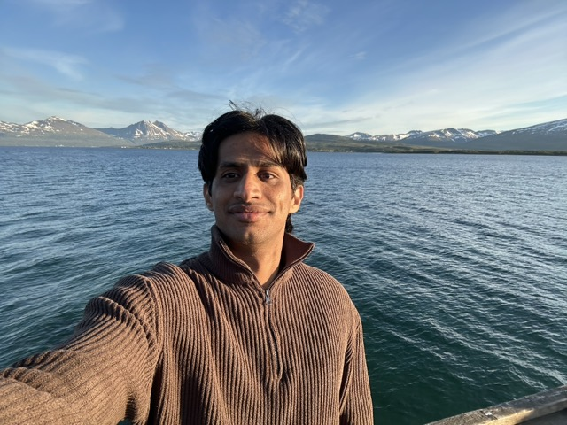
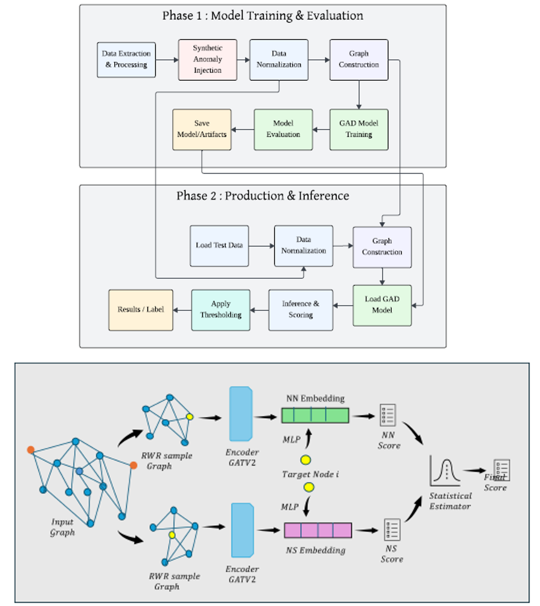
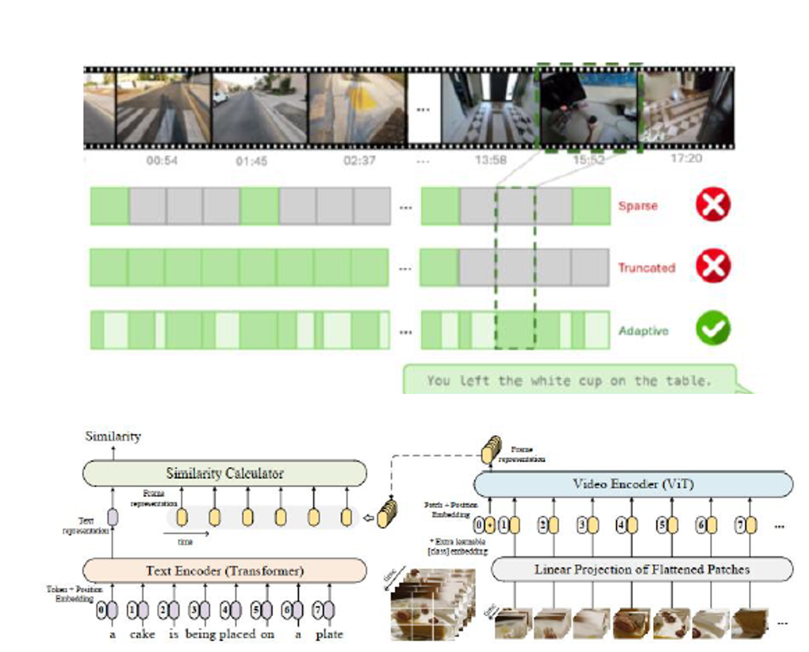
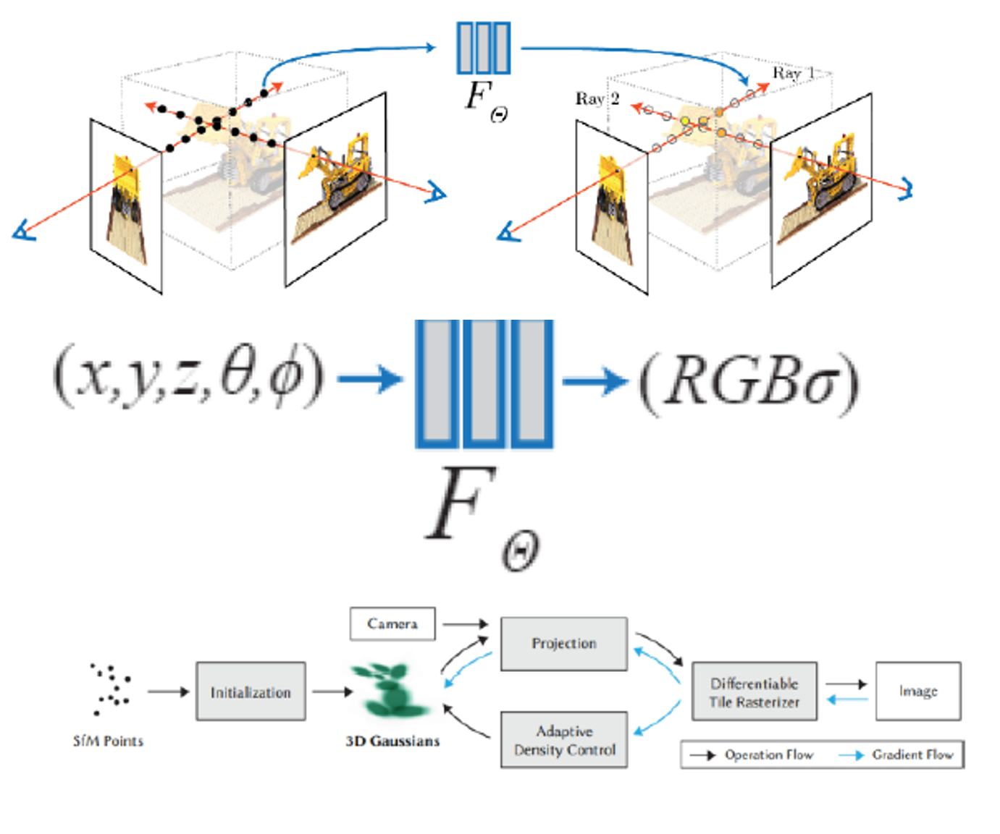
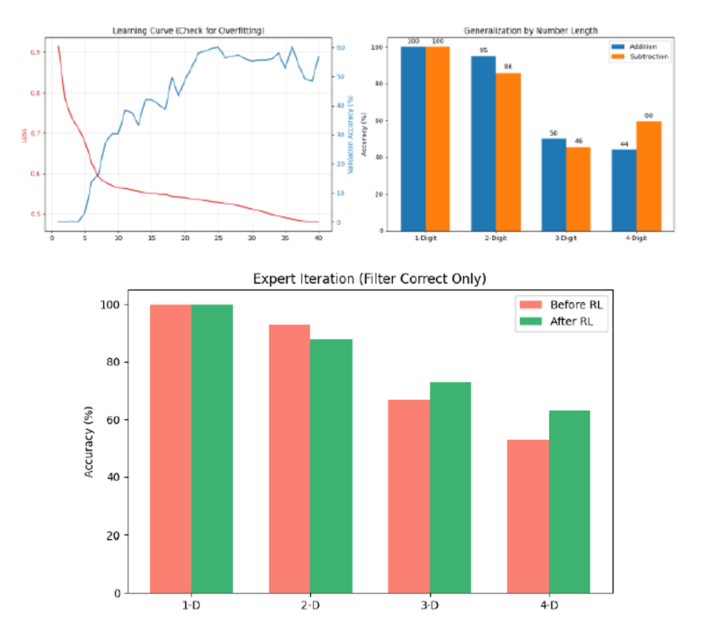
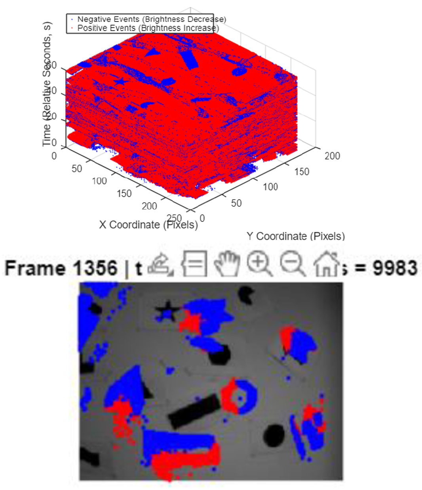
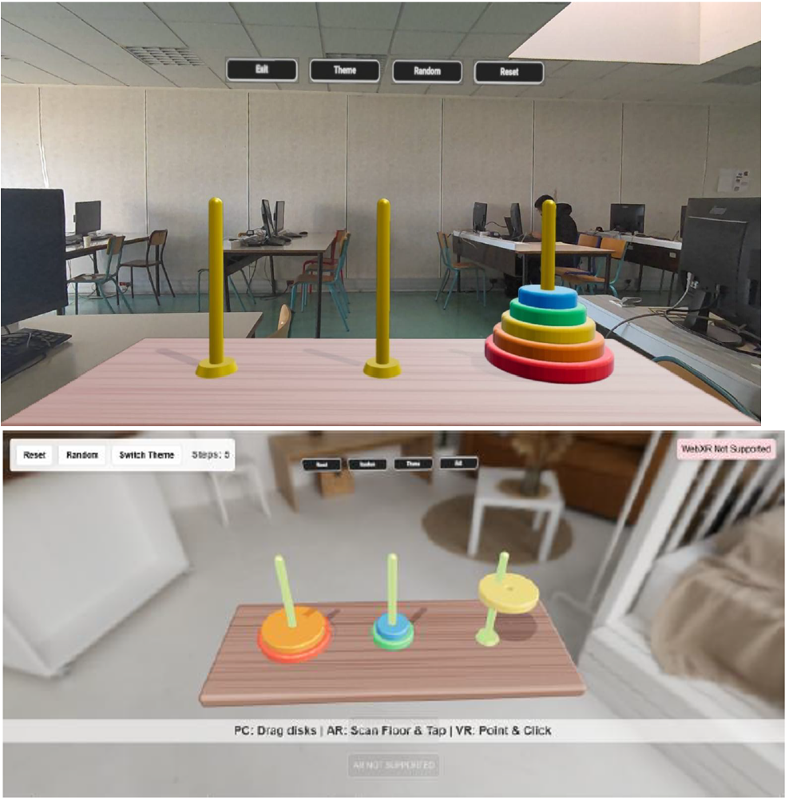
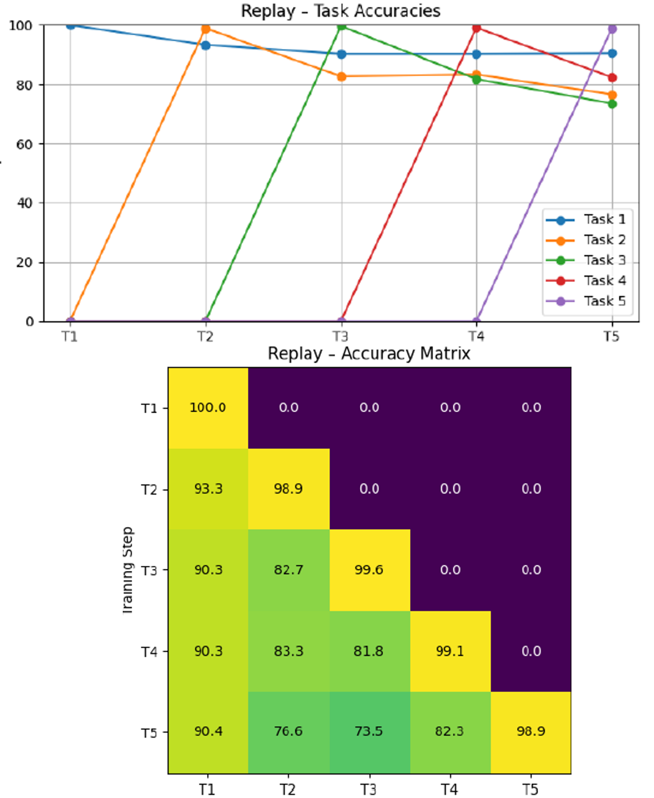
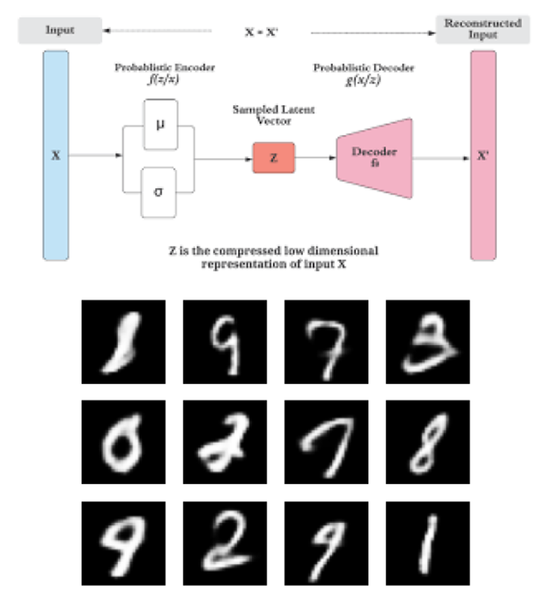
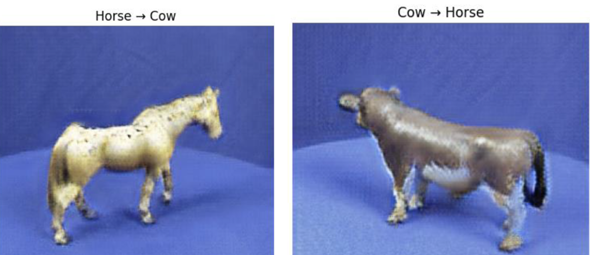

Abdul Basit
I completed my Master's degree at University of Paris-Saclay and my research internship at Orange Innovation. I specialize in GNNs, LLMs, VLMs, Video-Language Understanding, Computer Vision, Deep Learning, Reinforcement Learning, Fine-tuning, RAG, and AI Agents.
Looking for future career opportunities
Paris, France | Email: basitmal36@gmail.com
Latest News
Education
M.Sc. in Machine Vision and Artificial Intelligence
2024 - 2026University of Paris-Saclay — Grade: M2: 14.6/20, M1: 12/20
Bachelor of Engineering (EE)
2020 - 2024Bahria University — Grade: 3.46/4.00
Research & Engineering Experience

AI Research Engineer (Intern) @ Orange Innovation
Feb 2026 - Aug 2026Modeled complex network topologies and developed performance-optimized GNNs for anomaly detection. Adapted ANEMONE into an edge-aware GATv2 self-supervised framework. Designed a physics-informed synthetic anomaly generator. Built end-to-end ML pipelines with distributed training on HPC clusters using Slurm.



Learning Arithmetic Operations Using Small-LLM With Reinforcement Learning
Developed a lightweight LLM specialized in arithmetic reasoning using a two-stage pipeline: Supervised Fine-Tuning on a curriculum-based dataset, followed by Reinforcement Learning via Expert Iteration (Rejection Sampling).







Selected Implementations
- Implemented the original Transformer and Vision Transformer from scratch using PyTorch.
- Fine-tuned (Instruction-based) Mistral-7B using QLoRA on the Stanford Alpaca Dataset.
- Built a Multimodal Vision Language Model from scratch (PaliGemma).
- Developed a Small Language Model using Reinforcement Learning for mathematical reasoning.
- Implemented LLaMA-2 architecture from scratch in PyTorch.
- Implemented CLIP from scratch using JAX/Flax.
- Performed LLM alignment using PPO/DPO.
Technical Skills
Programming Languages: Python, C++, C, Verilog, VHDL, HTML/CSS, SQL
ML / DL Frameworks: PyTorch / DDP, JAX / Flax, TensorFlow, Hugging Face, Scikit-learn, PyTorch Geometric, NetworkX, OpenCV, Matplotlib, NumPy, Pandas
Deep Learning: CNNs, Autoencoders, GANs, VAEs, Diffusion Models, Transformers, Vision Transformers
NLP & LLMs: RNNs / LSTMs, Transformers, State Space Models, CLIP / SigLIP, RoPE, RMSNorm, KV Cache, Quantization, Tokenization, LoRA / QLoRA
Reinforcement Learning: Value Iteration, Policy Iteration, PPO, DPO, GRPO
Computer Vision: NeRF, Gaussian Splatting, SDF, Meshes / Voxels, Volume Rendering, Ray Tracing
Graph Machine Learning: GCN, GAT / GATv2, Community Detection, Knowledge Graphs, GraphRAG
Agentic AI: LangChain, LangGraph, Prompt Engineering, Tool Calling, MCP, RAG
Explainability: SHAP, LIME, Post-hoc Feature Attribution
Tools & Platforms: Git / GitHub, Docker, Linux, Kubernetes, CI/CD, FastAPI, MLOps, Grafana, Slurm, W&B
Languages: English (Fluent), French (Actively Learning)
Hackathons, Honours & Awards
Mistral AI MCP Hackathon
2025Integrated Facebook with LeChat to manage account actions and extract insights directly on the LeChat interface using Alpic.
Activate Your Voice Hackathon
2026Created a memory-persistent conversational AI agent to automate various tasks.
- National Grassroots Research Initiative Fund: Awarded NGIRI Fund for Bachelor's Thesis.
- Government of Pakistan: Awarded a Laptop from PMYLS.
References
- Kahina Mokrani (Orange Innovation) — Internship Supervisor | kahina.mokrani@orange.com
- Dr. Hedia Tabia (University of Paris-Saclay) — Master's Supervisor | hedi.tabia@univ-evry.fr
- Dr. Abdul Attayyab Khan (Bahria University) — Bachelor's Supervisor | AAKHAN.BUKC@bahria.edu.pk